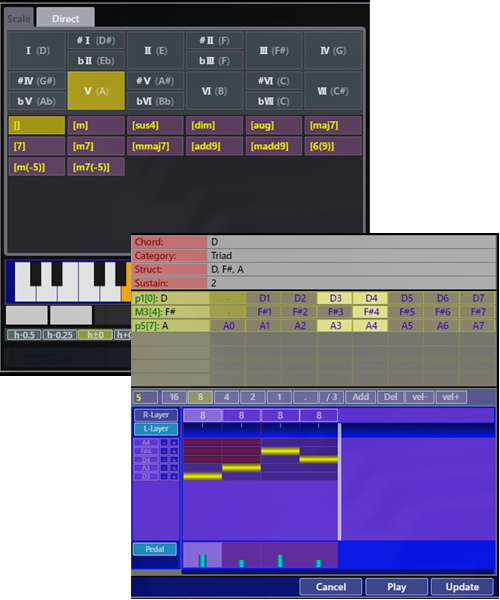

Virtual Harmonizer
概要
サービス
マニュアル
基礎知識
お問い合わせ
リンク
概要
サービス
マニュアル
基礎知識
お問い合わせ
リンク
イメージをスピーディーに音楽に変換
ハーモナイズに特化した新しいDTM
コードとバッキングパターンの組み合わせで、伴奏メロディを自動生成
Vartual Harmonizerで伴奏を作成する過程では、 音程を直接打ち込まず、コードもしくはより汎用性の高いディグリーネームと、 コードが持続する拍の情報を保持し、 コードの構成音に応じてバッキングパターンを適用させることで、伴奏メロディを生成します。 この仕組みにより、コードを変更するだけで自動的にハーモナイズされるため、 伴奏制作にかける時間を圧倒的に短縮することが可能です。

音楽理論に基づいた汎用性の高いアプローチで、コード進行をデザイン
Vartual Harmonizerで伴奏を作成する過程では、 音程を直接打ち込まず、コードもしくはより汎用性の高いディグリーネームと、 コードが持続する拍の情報を保持し、 コードの構成音に応じてバッキングパターンを適用させることで、伴奏メロディを生成します。 この仕組みにより、コードを変更するだけで自動的にハーモナイズされるため、 伴奏制作にかける時間を圧倒的に短縮することが可能です。
多種多様な旋律楽器からチョイスし、ピアノ伴奏とのアンサンブルを楽しむ
Vartual Harmonizerで伴奏を作成する過程では、 音程を直接打ち込まず、コードもしくはより汎用性の高いディグリーネームと、 コードが持続する拍の情報を保持し、 コードの構成音に応じてバッキングパターンを適用させることで、伴奏メロディを生成します。 この仕組みにより、コードを変更するだけで自動的にハーモナイズされるため、 伴奏制作にかける時間を圧倒的に短縮することが可能です。
バッキングテーマを利用することで、初心者も楽々ハーモナイズ
Vartual Harmonizerで伴奏を作成する過程では、 音程を直接打ち込まず、コードもしくはより汎用性の高いディグリーネームと、 コードが持続する拍の情報を保持し、 コードの構成音に応じてバッキングパターンを適用させることで、伴奏メロディを生成します。 この仕組みにより、コードを変更するだけで自動的にハーモナイズされるため、 伴奏制作にかける時間を圧倒的に短縮することが可能です。